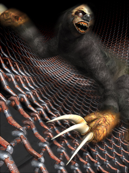
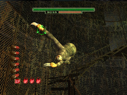
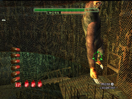
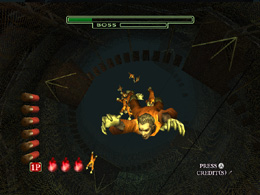
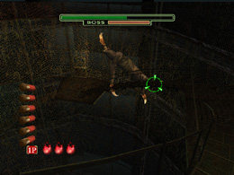
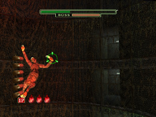
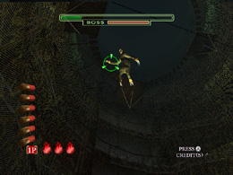

HODIII FOOL
ボス攻略 HODIII

「FOOL」は巨大なナマケモノ型のモンスターだ。だが、その外見とは
裏腹に、俊敏な動きで襲いかかってくるぞ。弱点は右手、右足、左手、
左足だ。
「FOOL」に限り、バトル中に弱点の手足に印が現れるため、どこを狙えば
いいかは一目瞭然だ。ただし印の真中を狙わなければ、効果的に
ダメージを与えることはできないぞ。
「FOOL」の攻撃パターンは6種類だ。
【１】右手引っかき

この攻撃の時には、「FOOL」の動きはさほど大きくないので、弱点を
狙いやすい。印の真ん中を狙い続けるつもりで、撃つんだ。
【２】左足引っかき

この攻撃の時には、「FOOL」の弱点である左足は、体の中心から
右下方向を左右に揺れるぞ。途中で非常階段に視界を阻まれるが、
その状態でもダメージを与えることはできる。視界がさえぎられても
構わず攻撃を続けるんだ。
【３】死体落とし

死体は上空から次々と落ちてくるが、視界の端から降ってくる死体は
こちらに当たらないので、中央部分の死体に集中すること。
1発でなるべく多くの死体を片付けられるよう、死体が密集している箇所を
狙うといいぞ。
【４】右足引っかき

弱点の右足は、「FOOL」の腰を軸に中央右から中央左へ揺れ動くぞ。
動き自体はあまり早くないので、落ち着いて撃ちこめば対処できるはずだ。
【５】左手引っかき

この攻撃の時には、「FOOL」は両手を大きく使って金網を移動してくるぞ。
弱点の左手が激しく揺れるため、照準を常に弱点に合わせ続けて狙うのは
困難だ。左右のふり幅のうち、どちらを狙うか決めて、片方だけに
集中して弾を撃ちこむんだ。
【６】飛びかかり

この攻撃の時には、攻撃チャンスはボスが空中からこちらに襲いかかって
くるまでのわずかな時間しかないため、その間にリロードしている余裕はない。
しかも、充填した6発を全弾命中させなければ、「FOOL」の攻撃を防ぐ
ことはできない、非常にタフなミッションだ。
「FOOL」が飛び出すまでにリロードしておき、「FOOL」が飛び出したら、
撃ちながら狙いを少しずつ下にずらす感覚で、落ち着いて弾を当てていけ。
 RSS
RSS